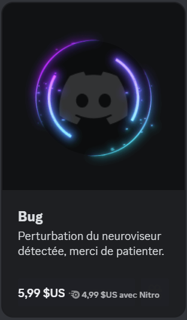
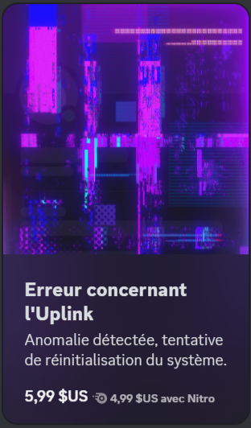

Logo de Discord
Pour aller sur le site cliquer ici
Logo de Discord
Pour aller sur le site cliquer iciDiscord est crée le 13 mai 2015 par Jason Citron et son siege social est situé a San Francisco.
Discord a été créé et conçu pour le jeu vidéo en ligne. Il permet aux joueurs d’une même partie de discuter entre eux à l’oral; il a permis la création de communauté et reste incontournable pour les g@mers grâce à son ergonomie.


Aujourd'hui, Discord comptabilise plus de 150 millions d'utilisateurs actifs mensuels dans le monde entier, dont 80% ont entre 13 et 24 ans.

Discord offre une utilisation privée, permettant des échanges de messages individuels et la création de groupes privés. Cependant, il offre également une utilisation publique à travers des serveurs communautaires où les messages envoyés sont visibles par tous.
La messagerie instantanée Discord ne vit pas de la publicité, son modèle économique repose sur des services payants.
Tout d'abord Discord est gratuit et sans pub donc il génère ses revenus grâce à la vente de Discord Nitro qui est un abonnement. Voici les avantages supplémentaires offerts par Discord Nitro par rapport à un compte gratuit :
Discord génère également des revenus grâce à la vente de cosmétiques qui peuvent être affichés sur le profil de l'utilisateur.
 Ainsi que les boosts de server qui permettent d’améliorer les fonctionnalités du serveur, comme la qualité audio des appels vocaux et le nombre d'emojis personnalisés que le serveur peut utiliser.
Discord collecte les données utilisateur après les avoir anonymalisée mais ne vends pas les données personnelles des utilisateurs de son réseau.
Les informations visibles par les autres utilisateurs sont les informations de connexion qui permettent de voir ses amis connectés; mais discord permet de changer ces informations ou les desactiver. De plus discord ne partage pas les informations personnelles des utilisateurs comme le numéro de téléphone des comptes. Mais discord permet de désactiver certains paramètres de Statistiques d’utilisation.
Les données déposées appartiennent à Discord.
Les avantages de Discord sont sa popularité sa réputation de site sûr; il n’a pas de publicités, il est facile à comprendre pour un usage basique et il est facile de se créer un compte. Les serveurs sont souvent vérifiés par Discord.
Les vulnérabilités et les points faibles du réseau sont l’obligation de posséder un compte , la création de compte qui nécessite un numéro de téléphone et la réputation du réseau social dit pour les geeks.